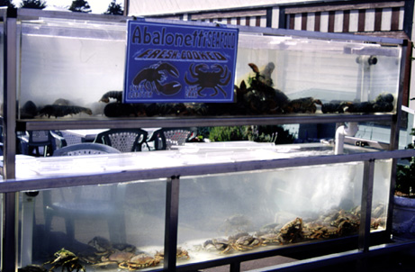

Abalonetti's Crab and Lobster Tank. After leaving the candy store and continue walking along the wharf, you pass Abalonetti's Seafood Restaurant. Outside they have this crab and lobster tank from which you can pick live animals to be your dinner, though most of the animals didn't look too happy to be in their captive state. The photograph was originally produced with late afternoon sun and a 35 mm camera using Provia slide film, shutter speed 125, F19. Photo copyright Andrea L. Arredondo, May 11, 2000.
Updated by Andrea Arredondo
5/19/00